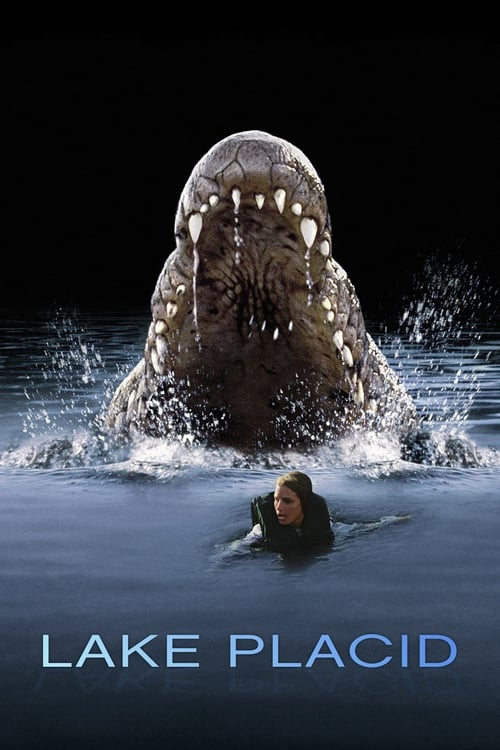
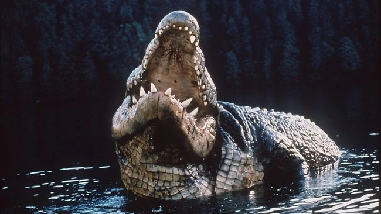
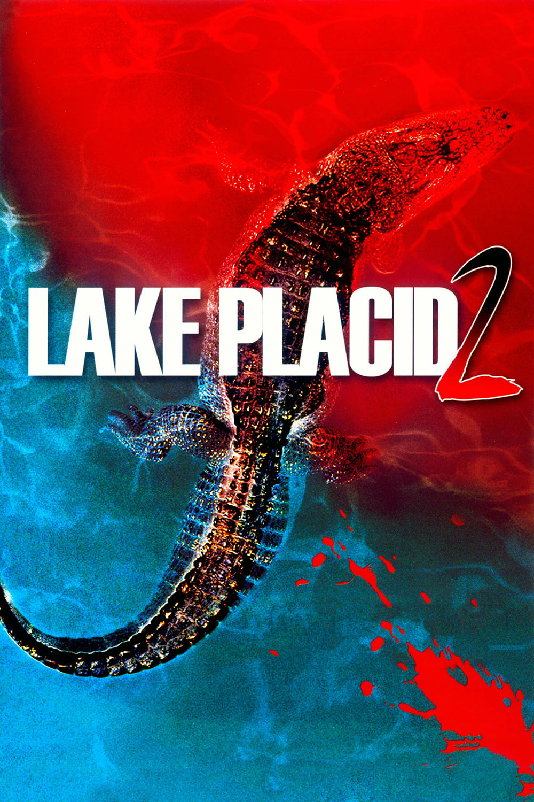
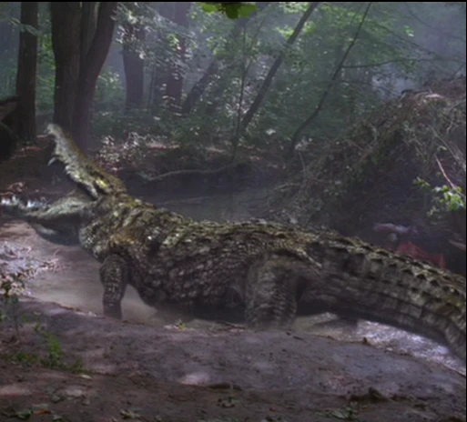

Pânico no Lago (1999)
Distribuidores: 20th Century Fox & Phoenix Pictures
Sinopse: Depois da morte violenta de um navegador, o xerife de uma cidadezinha pede ajuda de um especialista em pesca e de uma paleontóloga, que têm de lidar com o aparecimento de um crocodilo imenso e extremamente agressivo fazendo vítima atrás de vítima
Crocodilos Ásiaticos de água salgada: No filme a dois crocodilos ásiaticos imensos que foram alimentados por Dolores Bickerman, que alimentava eles com carnes com hôrmonios de crescimento rejeitadas pela saúde pública do Maine e Gados, por isso eles tem esse tamanho absurdo de 9 metros de comprimento.
Pânico no Lago 2 (2007)
Distribuidores: 20th Century Fox Home Entertainniment, Sony Pictures Home Entertainment & Syfy Pictures
Sinopse: Um chefe de polícia se une a um paleontólogo de Nova York para achar o monstro que anda rondando a cidade. Eles logo se dão conta de que o que procuram não é somente um crocodilo gigante, mas três.
Crocodilos de água salgada ásiaticos: Esses 4 crocodilos do filme são filhos dos dois do primeiro filme, eles mataram Dolores em 2004 e sua irmã Sadie Bickerman começou a alimentalos desde então, eles tem 8,5 metros de comprimento, e foram alimentados com carnes com hôrmonios de crescimento
